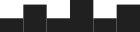
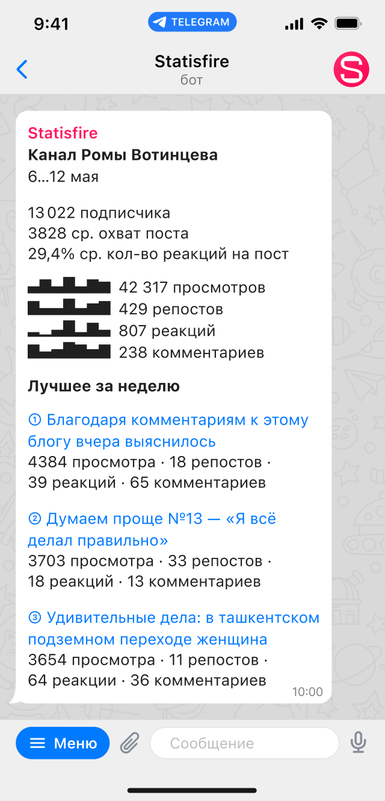

Statisfire
Телеграм-канал
Аналитика телеграм-канала
Помогает видеть результаты работы и точнее понимать интересы аудитории

Оценивайте вовлечённость аудитории на графиках
Смотрите, какие темы и форматы наиболее интересны читателям
